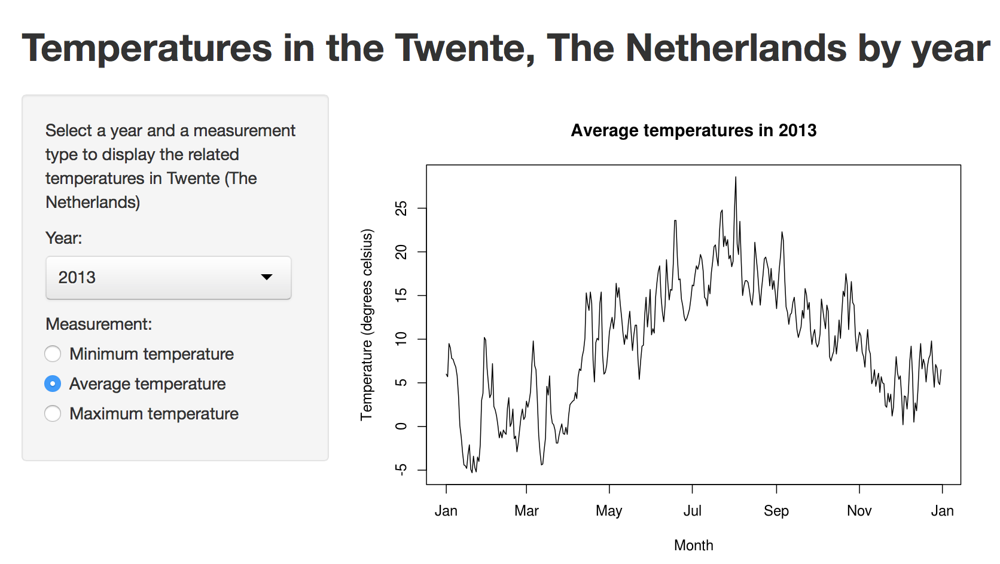

- Displaying a graph of temperatures in a given year in Twente, a location in The Netherlands
- Using a public data source of temperatures in The Netherlands
- Easy online access to the temperature data: https://underminer.shinyapps.io/temperatures/
Data is from the ROYAL NETHERLANDS METEOROLOGICAL INSTITUTE (KNMI): http://www.knmi.nl
The data was loaded and extracted using the following R-code:
download.file("http://www.knmi.nl/klimatologie/daggegevens/datafiles3/290/etmgeg_290.zip",
"etmgeg_290.zip", method="curl")
unzip("etmgeg_290.zip")
weather <- read.csv("etmgeg_290.txt", skip=49)
weather[,42] <- NULL
names(weather) <- c("STN","YYYYMMDD","DDVEC","FHVEC","FG","FHX","FHXH",
"FHN","FHNH","FXX","FXXH","TG","TN","TNH","TX","TXH",
"T10N","T10NH","SQ","SP","Q","DR","RH","RHX","RHXH",
"PG","PX","PXH","PN","PNH","VVN","VVNH","VVX","VVXH",
"NG","UG","UX","UXH","UN","UNH","EV24")
We are only interested in the temperature columns (TG = average, TN = minimum, TX = maximum):
temperatures <- weather[,c("YYYYMMDD", "TG", "TN", "TX")]
names(temperatures) <- c("date", "avg", "min", 'max')
# Temperatures are in 0.1 degrees Celsius, convert it to degrees Celsius
temperatures[,2:4] <- temperatures[,2:4] / 10
Input on the left, output on the right:
